GDAŃSK JEST MIASTEM, KTÓRE CHCESZ POZNAĆ!
TO POCZĄTEK TWOJEJ PRZYGODY...
TO POCZĄTEK TWOJEJ PRZYGODY...
Intuicyjna wyszukiwarka
Nie musisz szukać w podstronach, aby
odnaleźć miejsca, które wzbudzą Twoje zainteresowanie .
Minimum teorii
Opisy zabytków na naszej stronie pozwolą Tobie
zaoszczędzić czas poświęcony na przewodnika.
Zabytki w jednym miejscu
Dzięki naszej aplikacji zwiedzanie Gdańska
już nigdy nie będzie nudne.
już nigdy nie będzie nudne.
●Stocznia Gdańska
Stocznia Gdańska zlokalizowana na lewym brzegu Martwej Wisły i na Ostrowiu. (od 2006 roku: Stocznia Gdańsk SA) – jedna z największych polskich stoczni, zlokalizowana w Gdańsku na lewym brzegu Martwej Wisły i na Ostrowiu.
Stocznia Gdańska zlokalizowana na lewym brzegu Martwej Wisły i na Ostrowiu. (od 2006 roku: Stocznia Gdańsk SA) – jedna z największych polskich stoczni, zlokalizowana w Gdańsku na lewym brzegu Martwej Wisły i na Ostrowiu.

●Żuraw
Żuraw - największy dźwig portowy średniowiecznej Europy, jedna z najbardziej charakterystycznych budowli Gdańska. Położony nad Motławą, służył do przeładunku towarów i stawiania masztów na statkach. Pełnił zarazem funkcję bramy miejskiej. Obecną formę uzyskał w latach 1442-1444.
Żuraw - największy dźwig portowy średniowiecznej Europy, jedna z najbardziej charakterystycznych budowli Gdańska. Położony nad Motławą, służył do przeładunku towarów i stawiania masztów na statkach. Pełnił zarazem funkcję bramy miejskiej. Obecną formę uzyskał w latach 1442-1444.

●Dwór Artusa
Dwór Artusa - przez wiele lat był jednym z najwspanialszych tego typu obiektów w Europie północnej. Dwory Artusa powstawały licznie w całej Europie a szczególnie w miastach hanzeatyckich, jako miejsca spotkań zamożnego patrycjatu, kupców i rzemieślników.
Dwór Artusa - przez wiele lat był jednym z najwspanialszych tego typu obiektów w Europie północnej. Dwory Artusa powstawały licznie w całej Europie a szczególnie w miastach hanzeatyckich, jako miejsca spotkań zamożnego patrycjatu, kupców i rzemieślników.
●Gdański Dworzec
Reprezentacyjny i przestronny Dworzec Główny został wybudowany w latach 1894-1900, w stylu tzw. "gdańskiego renesansu". Projektantami kompleksu dworcowego byli Alexander Rundel, Paul Thomer i Georg Cuny.
Reprezentacyjny i przestronny Dworzec Główny został wybudowany w latach 1894-1900, w stylu tzw. "gdańskiego renesansu". Projektantami kompleksu dworcowego byli Alexander Rundel, Paul Thomer i Georg Cuny.

●Bazylika Mariacka
Bazylika Mariacka zwana "koroną miasta Gdańska" - Kościół Wniebowzięcia Najświętszej Marii Panny. Największa ceglana, gotycka świątynia w Europie, powstawał 159 lat w kilku etapach w latach 1343-1502.
Bazylika Mariacka zwana "koroną miasta Gdańska" - Kościół Wniebowzięcia Najświętszej Marii Panny. Największa ceglana, gotycka świątynia w Europie, powstawał 159 lat w kilku etapach w latach 1343-1502.

●Fontanna Neptuna
Fontanna Neptuna - została zaprojektowana przez Abrahama van den Blocke. Podstawowym źródłem strumieni wodnych jest trójząb trzymany przez władcę mórz i oceanów w prawicy, znajdujące się u jego stóp konie morskie oraz krawędź postumentu.
Fontanna Neptuna - została zaprojektowana przez Abrahama van den Blocke. Podstawowym źródłem strumieni wodnych jest trójząb trzymany przez władcę mórz i oceanów w prawicy, znajdujące się u jego stóp konie morskie oraz krawędź postumentu.
Płatność w bitcoinach
Nagrywanie spacerów
Zapewniamy transport

Dostępne dla wszystkich
Dokładne planowanie
Wypożyczamy przewodniki
Zapewniamy opiekę
Przystanki z parasolami